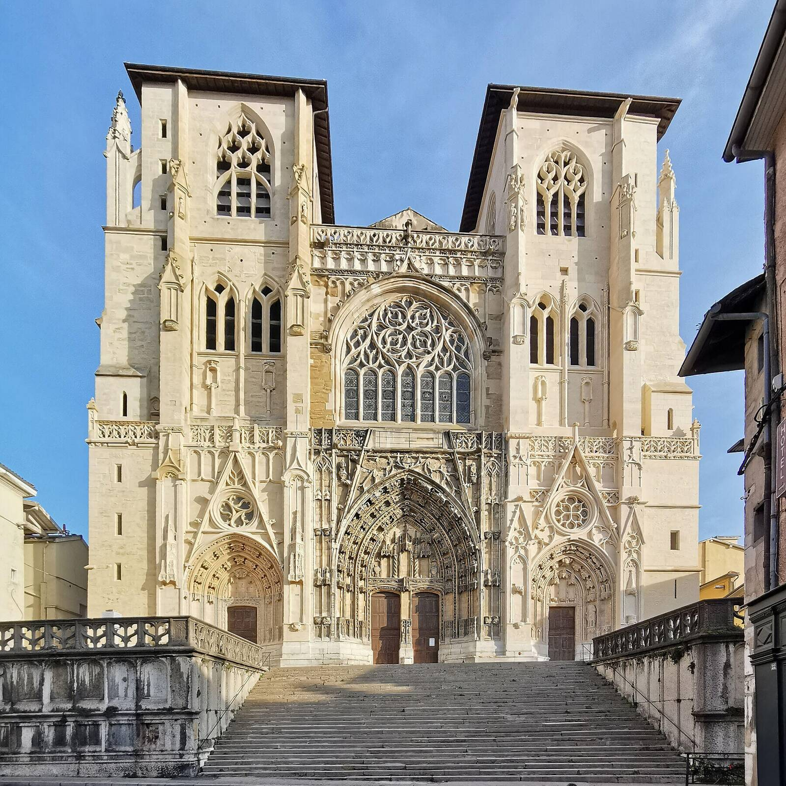

Notre histoire
Un cabinet né de l'amour de Vienne
Le Dr Céline Filipputti, viennoise de cœur et amoureuse de sa ville, a choisi d'installer son cabinet au cœur du centre historique de Vienne, au plus près du patrimoine qu'elle chérit.
C'est en hommage à ce riche patrimoine viennois qu'elle a donné à son cabinet le nom de Cybèle, en écho au célèbre jardin de Cybèle, joyau antique de la ville. S'installer en plein centre-ville, entourée de ces trésors d'histoire, était une évidence — et c'est avec un grand bonheur qu'elle vous y accueille.